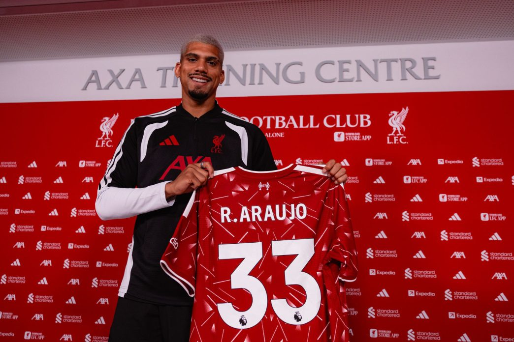

Noticias destacadas

Ciclo cumplido
Nacional cesó a Jorge Bava de su cargo como entrenador
El club comunicó la decisión después de los últimos resultados deportivos.

De estreno
Clausura: Peñarol, con una baja demasiado sensible, recibe a Central. Hora, formaciones y dónde verlo
El equipo aurinegro afronta un nuevo partido por el Torneo Clausura.

Mercado de fichajes
Ronald Araújo vuelve a ser protagonista en el mercado
El defensor uruguayo aparece en el centro de las novedades del fútbol internacional.

Volvió a mojar
Merentiel volvió a marcar y le dio el empate a Boca ante Platense, para el que Nicolás López no tuvo minutos
El delantero uruguayo convirtió para rescatar un punto en el encuentro.

Escándalo en OFI
Semifinal de OFI terminó en batalla campal: golpes de puño y patadas
El encuentro terminó con graves incidentes y enfrentamientos entre los jugadores.

Se viste de rojo
Jadson Viera es el nuevo entrenador de Independiente: de campeón con Nacional a Avellaneda
El entrenador uruguayo continuará su carrera en el fútbol argentino.